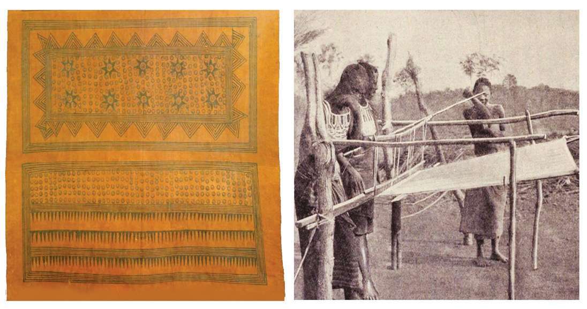

Cloth making
Cloth making was an art of making clothes from local cotton species, barks of trees and animal skins. A number of communities in pre-colonial Africa specialised in cloth making. Clothes were made by pounding the bark of certain trees. They also decorated clothes using dyes. This way of making clothes was common among the Haya, Nyakyusa and Ganda of East Africa who used appropriate tree barks to make clothes. Other societies used skins of animals such as sheep, goats and camels to make clothes. This was common in Madagascar, Northern Africa, Sudan and the Sahel belt of West Africa, as well as among the Yoruba and people from Malawi and Mozambique.
Moreover, cotton cloth making was common in many African societies of Aksum-Sudan, Iwelen-Nigeria, Takrur-Ghana, Ufipa, Unyamwezi and Unyiha in East Africa. Other societies were the Shire Valley in Malawi and Igombe-Ilede in South Africa. Figure 5.1 shows cloth making in pre-colonial Africa.

Uses of clothes
People wore clothes in order to cover their bodies from nakedness, to decorate themselves, or keep themselves warm. Clothes were also worn on special occasions such as during religious, traditional and funeral ceremonies. Colours of clothes were also important for example in some societies. For example rainmakers wore black clothes as a symbol of dark clouds which pour rains. In other societies twins were not allowed to wear read clothes during raining seasons. Clothes became important commodities that stimulated the development of trade in the pre-colonial period.